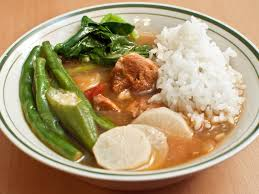

Sinigang

Ingredients
- Sinigang soup base
- 1 lb pork, beef, or chicken
- 1 tsp salt
- 1/2 radish, sliced in circles
- 1 cup spinach
- meat seasoning
Steps
- Boil 1 litre of salted water in a pot on high
- Add meat to boiling water, let simmer on low-medium for 10 minutes
- Add vegetables, cover pot
- Let cook for 5 minutes
- Serve with rice
Home